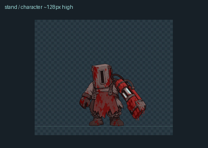
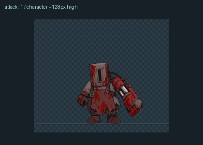
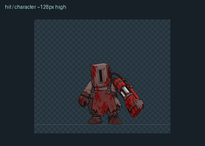
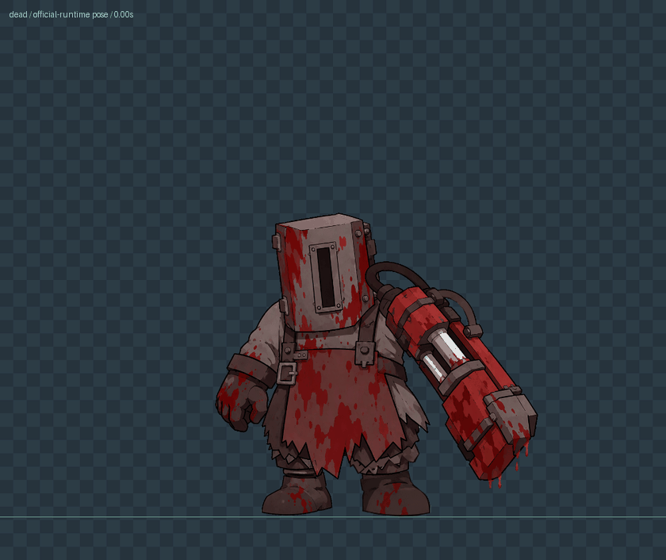

SJT · 下砸气流增强下砸气流与冲击波 / attack_2手机尺寸 / 角色约 128px 高
待机 / stand手机尺寸 / 角色约 128px 高
原地移动 / move手机尺寸 / 角色约 128px 高
前戳 / attack_1手机尺寸 / 角色约 128px 高
受击 / hit手机尺寸 / 角色约 128px 高
死亡 / dead
手机尺寸 / 角色约 128px 高